Life, Data, and Story
This is a summary of my research on data visualization for the Unit 2 Course Visualization Tools, Datasets, and Data Stories. I will explain my design method and practice through the process of “life to data, data to story”, starting with a definition of my design work:
“From the data given in words and figures, a way has to be found to extract the essential facts and put them into picture form.” (Neurath, 2017)
From Life to Data
Quantitative data is measurable, based on numbers and values, and capable of statistical analysis. It is commonly used to conduct research on a certain object in data visualization design research. In my two practices, Data-Selfie and London Soundscape, I collected data of various factors about daily routine and the internet usage in London. 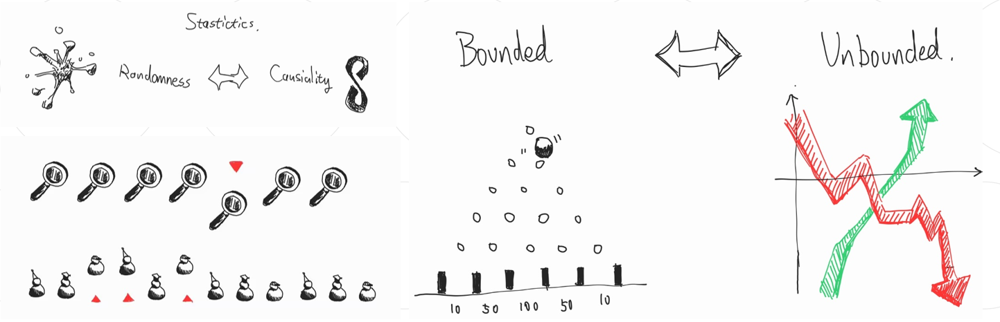 In the research on the subjects, designers encourage audience to engage in self-disclosure through research methods including diary studies, data-selfie, and autoethnography. Furtherly, by participating as interviewee and reflecting on their practices, designers can try mitigating the ambiguities in data interpretation. 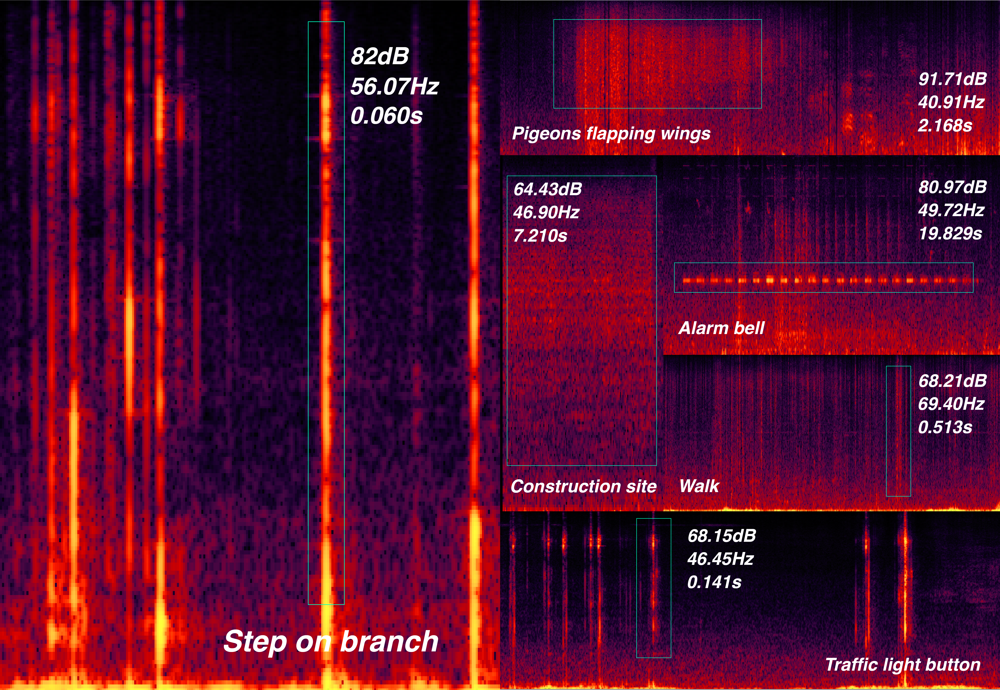 Designers also must deal with qualitative data to gain a deeper understanding of audience's behaviors and experiences and to explore their psychological dynamics. In my practice of London Soundscape, I used 'Mental Mapping' research method to record one's cognitive memory of the environment throughout their journey, revealing unspoken subconscious elements.
Visualize Data
Charts integrate elements in datasets and transform data into comprehensible symbols, supporting effective visual communication. Edward Tufte emphasizes in The Visual Display of Quantitative Information (1983) that the choice and design of symbols in charts are critical to accurately and clearly presenting complex information. 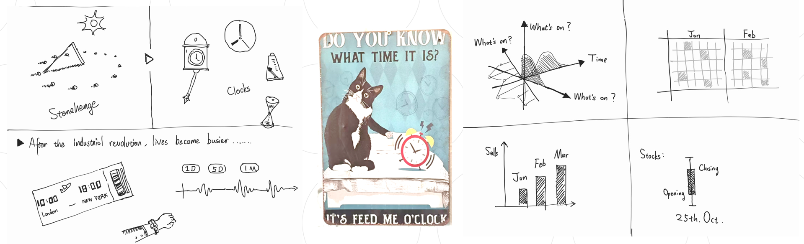 For instance, G. J. Whitrow discusses in his book Time in History: Views of Time from Prehistory to the Present Day (1989), various figures have been employed throughout history to record the flow of time, where the choice of symbols used in these charts is largely influenced by the perceived scale of time. 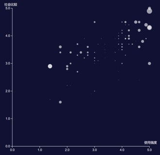 My workflow starts from sketching the visual elements, then moves to digital design tools. The sketches introduce novel ways of thinking and leads to designs that are uniquely customized for the specific type of data problems we are working with. (Lupi G. 2017) Then I use digital design tools like Microsoft Excel, Google Sheet, RAWGraphs, Tableau to quicky test the graphics towards the expected outcome. 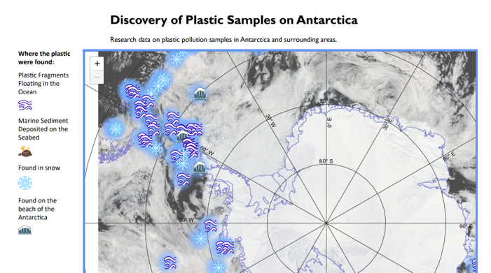 The design of interactive data visualizations follows a similar process. First try the effect on Figma, and then write the program through JavaScript, Python and R language. The website's backend database supports real-time updates of data, which is particularly important for work that pursues efficiency, like the human resource management system. It also places higher requirements on the readability of the data dashboard. Visualizing data in 3D modeling enhances performance in analyzing and presenting complex data. After 2D sketches, diagrams can be efficiently transformed into detailed 3D blueprints using software like Rhino and Blender. This method is discussed in Billie Faircloth's article in Architectural Design (2017), highlighting its frequent application in architectural practices. Furthermore, these models can be converted into physical forms using 3D printing to enrich the sensory experience of the data.
From Data to Story
Designers refer to narrative theory to match data visualization methods to usage scenarios, for the universal applicability of narratives: "There are countless forms of narrative in the world... First of all, narrative starts with the very history of mankind; there is not, there has never been anywhere, any people without narrative" (Barthes & Duisit, 1975, p. 237). 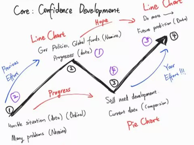 I summarize the narrative methodologies of several influential data visualization designers in Design Data Narrative, and explain how they hold true from a narratological perspective. I also demonstrated how I translated the theories into tangible influence in my projects, Nigeria`s Decarbonization Strategy Advocacy, and HR Management System Data Dashboard Iteration. 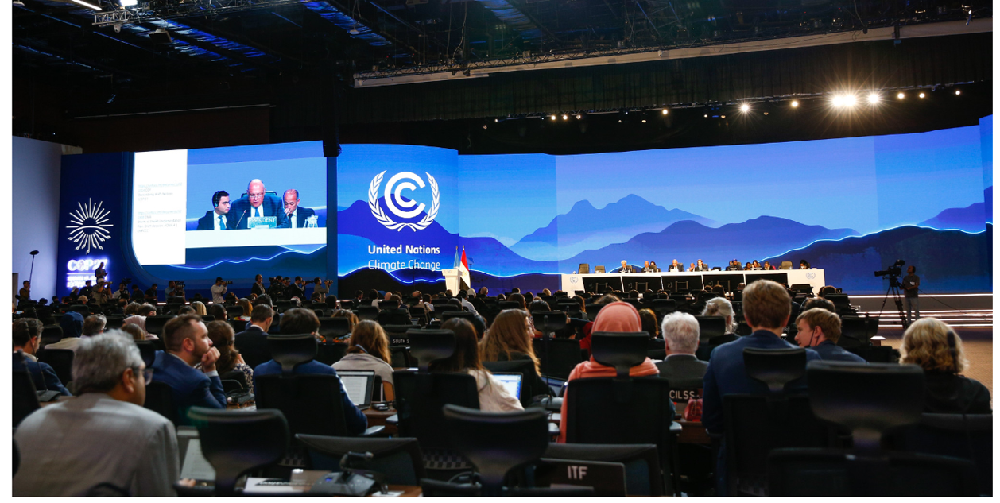 Although narrative is universal, story is not. People `s preferences are diverse and must be differentiated when designing surveys. For example, my above two projects were both related to decision-making, but were designed in very different ways. 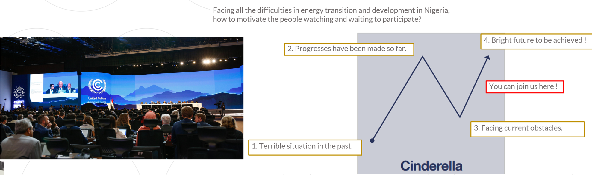 Firstly, data visualization on different media has different advantages. And the power of the medium can be more important than the content itself - as McLuhan M. pointed out in Understanding Media. While good design is considered both attractive and accurate, trade-offs across multiple design decision dimensions are often unavoidable. Corresponding to the medium, data visualization also differs depending on the audience. Methodologies from common design fields also apply to data visualization, such as the Visual Gestalt theory. Designers need to consider the effectiveness of visual communication to avoid the problems pointed out by Huff, D. in How to lie with statistics. (2023) 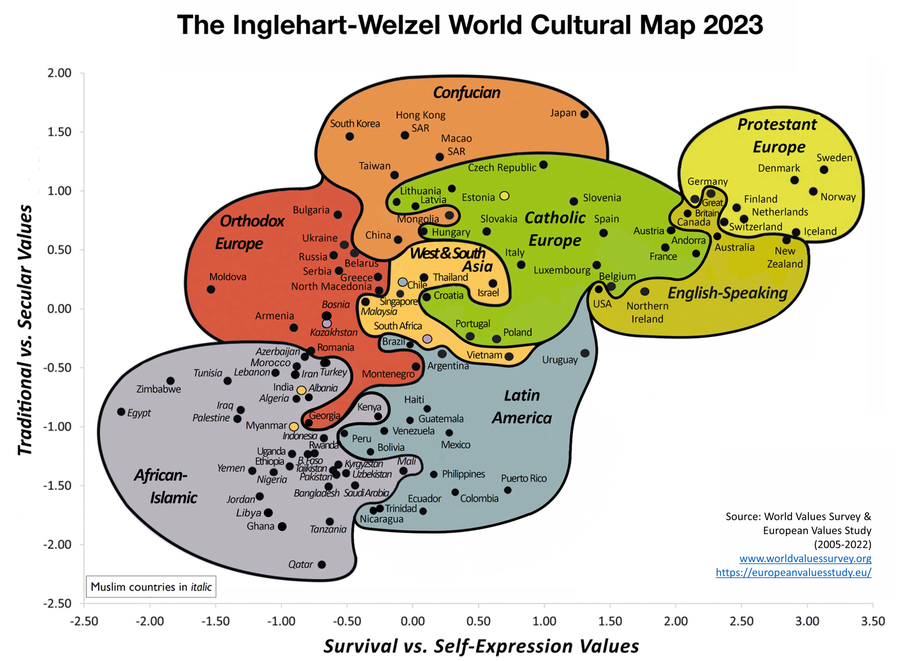 Then, Cultural context poses another challenge for data visualization. As is pointed out in the article Data Visualization for Audiences in Low & Middle-Income Countries (Tricia Aung, 2019), people with different perceptions of concepts such as humanity, science, statistic, data, etc. have caused troubles to designers. In my essay assignment: Finding Humanism from the Easternmost, I reviewed on the data visualization works of a Japanese Designer to see how the context of local culture molded the experience of the natives. And in my work, Fear and Expectation, I demonstrated the changing public perception of artificial intelligence.
Reference List
Billie Faircloth’s "Plasticity: The Architectural Tool of Material Computation" in Architectural Design, 2017
Huff, D., 2023. How to lie with statistics. Penguin UK.
Hanington, Bruce, and Martin B. (2012) Universal Methods of Design: 100 Ways to Research Complex Problems, Develop Innovative Ideas, and Design Effective Solutions, Quarto Publishing Group USA,
Levin, G. and Brain, T., 2021. Code as creative medium: a handbook for computational art and design. MIT Press.
Landais, L.L., Jelsma, J.G.M., Dotinga, I.R. et al. Office workers' perspectives on physical activity and sedentary behaviour: a qualitative study. BMC Public Health 22, 621 (2022). https://doi.org/10.1186/s12889-022-13024-z
Lupi G., 2017, Data Humanism: The Revolutionary Future of Data Visualization, https://giorgialupi.com/data-humanism-my-manifesto-for-a-new-data-wold
McLuhan, M., 1994. Understanding media: The extensions of man. MIT press.
Neurath, O., 2017. Pictorial statistics following the Vienna method. ARTMargins, 6(1), pp.108-118.
Reference: Interactive Art & Computational Design, Spring 2014 An Advanced Studio in Arts Engineering and Freestyle Computing // Prof. Golan Levin, Carnegie Mellon University
Whitrow, G.J., 1989. Time in history: Views of time from prehistory to the present day. Oxford University Press, USA.
Visualize the Complexity of Everyday Decisions
This is the proposal of my Final Major Project for the Master Degree. Currently it is my personal project, but please feel free to contact me if you have interest.
Introduction: Complexity in Daily Decision Making
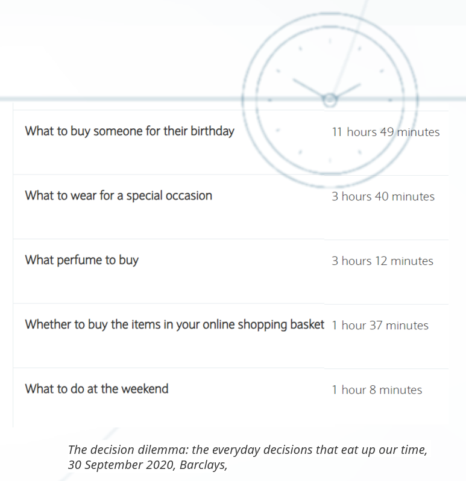 Information technology continues to provide opportunities to alter the decision-making behavior of individuals.[1] When people have gigabytes of data accessed at their fingertips, many researches and studies negatively shows that it s harder for people to make rational decisions.[2] A research conducted by Barclays Plan & Invest in partnership with researchers at UCL reveals that Brits spend a staggering 148 minutes each day deliberating over everyday decisions - from what to wear or eat, what to watch on TV or how to tackle their to-do list. [3] Despite the ubiquity of visualizations in research and practice, there is no comprehensive understanding of the potential and limits of information visualization for decision-making, where its ability to improve decision accuracy and quality has been overwhelmingly confirmed. [4] Therefore, I want to try develop a systematic method of data visualization as a skill or a tool to help people estimate the complexity of decisions they encounter in daily lives.
Audience and Outcome
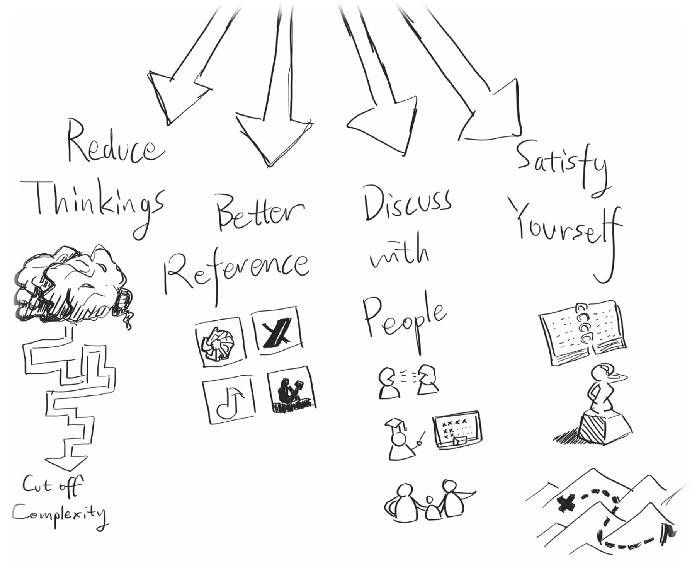
Describe the data visualization method I am looking for from two perspectives:
- This project focus on the application of data visualization method in everyday situations.
- The data of complexity itself stands as the topic in the data visualization output, which is established for the audience to explore the micro narrative in their everyday life.
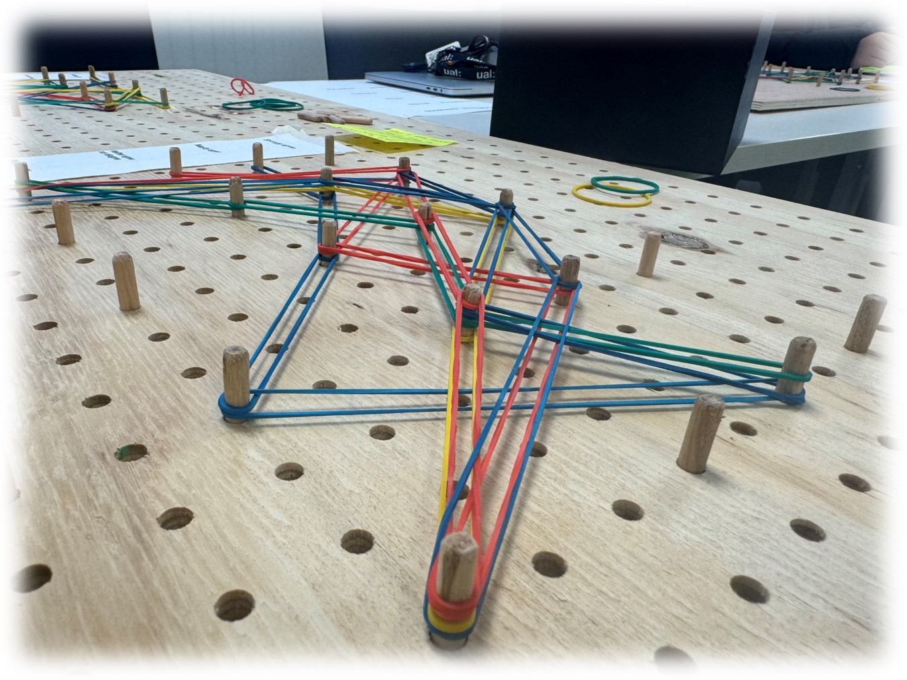
I will conduct secondary research, questionnaire, interview and cognitive mapping research to get enough knowledge to organize the design methodology steps by steps:
- Decide on a certain scenario that fits the theme and is convenient for me to practice designing.
- Define the index (or indexes) to describe the experience of complexity in decision making.
- Scale the variables that compose the index and connect them with theoretical basis.
- Organize the visual representation of the index on charts and other creative forms.
After making these decisions, I will have some design prototype to proceed ---- to conduct advanced research methods of cultural probes and design workshops.
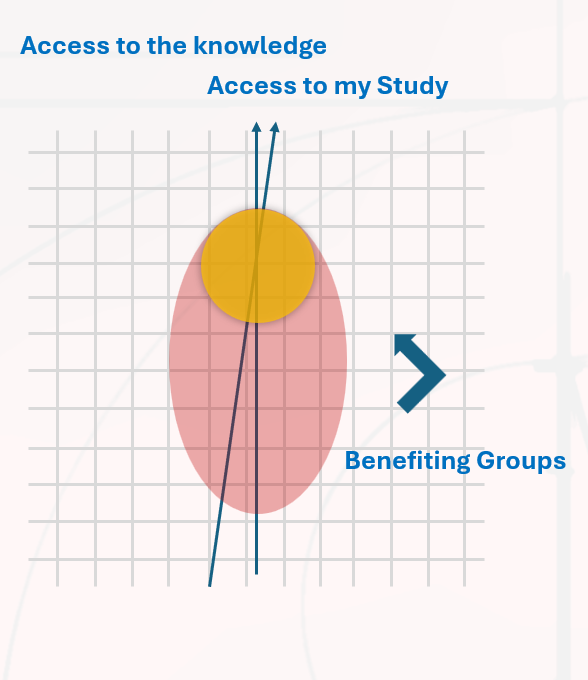
The audience would be: people living in a modern society who have no professional knowledge of the professional areas involved in this topic, such as business decision-making, and who (may) encounter difficulties in daily life decision-making. In terms of situations, the audience group might focus on university students.
Subject Perception
DESIGN RESEARCH METHODS / 2024
This design project contains practicing the research method of Data Selfie and Sensory Mapping, and is part of Postgraduate Unit Data visualization Tools, Datasets and Data Stories.
For groups such as urban office workers and students who have high life pressure, it is difficult for them to be conscious of one`s regulation (quantitatively recorded) information. (Landais, L.L. et al., 2022) In this practice of mine, I collected data of various factors that might affect people`s work efficiency : weather, time until the next deadline, commuting status, coffee, office environment, etc.
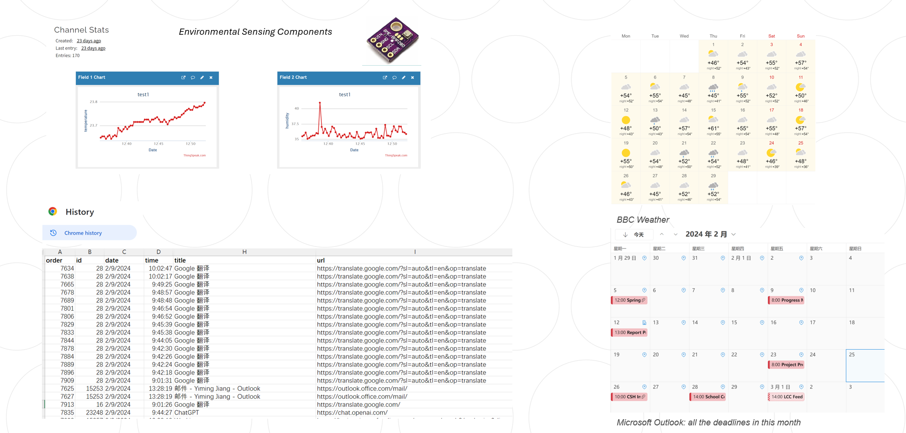
Data-Selfie records one`s own data retains more subjectivity and privacy and is perfect for observing preferences of a targeted group. Designers encourage audience to engage in self-disclosure, including diary studies, data-selfie, autoethnography and other research methods. Here I took myself as object, worked with data of my browsing history to see my energy routine throughout a day, to avoid the difference in the interpretation of data that poststructuralists concerns.
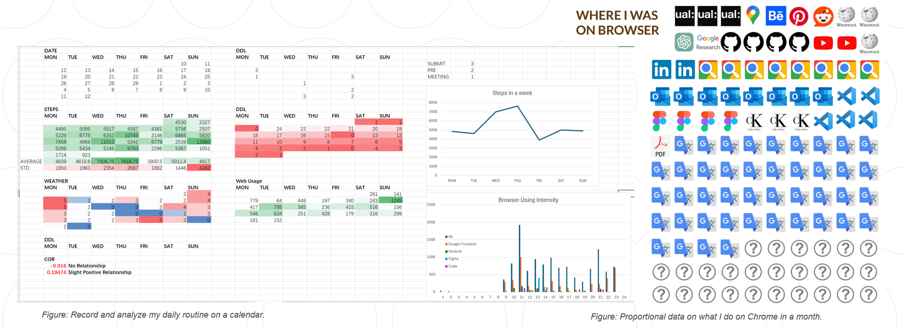
But to describe some other scenarios of life, designers must deal with qualitative data. According to Tega Brain and Golan Levin (2021), databases are amassed from our digital communications, search histories, transactions, step counts, sleep patterns, and journeys.
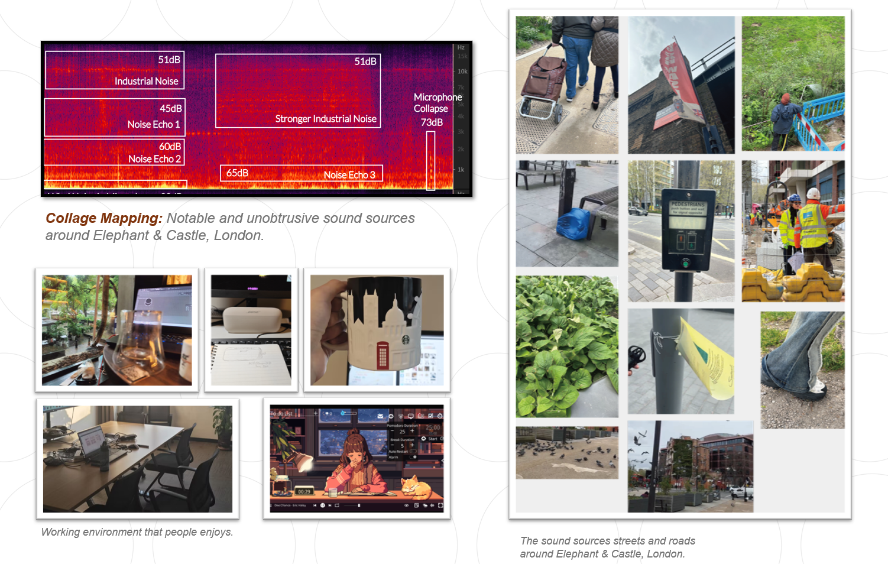
For this, I practiced 'Mental Mapping' research to record one's cognitive memory of the environment throughout their journey, revealing unspoken subconscious elements. Such method helps designers to gain a deeper understanding of user behaviors and experiences and to explore their psychological dynamics.
I recorded different sounds from a scene and resolved them into sound source data. By comparing and relating it to one's description of the experience, I was able to better understand the weight of audio elements that might potentially be , immersive, overlooked or unusual.
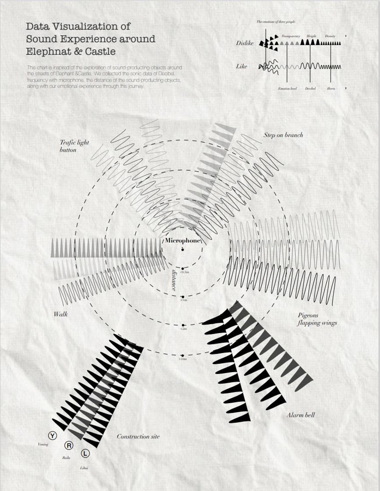
The outcome charts reconstructs the sound source data with visual languages to restore the sonic environment in a way that is easy to express and communicate. The subjective experience from 3 different personality types is distinguished based on the data of a 5-Point Likert Scale.
DESIGN DATA NARRATIVE
DESIGN RESEARCH / NARRATIVE RESEARCH / 2024
Why finding narratives from datasets?
"There are countless forms of narrative in the world... First of all, narrative starts with the very history of mankind; there is not, there has never been anywhere, any people without narrative" (Barthes & Duisit, 1975, p. 237).
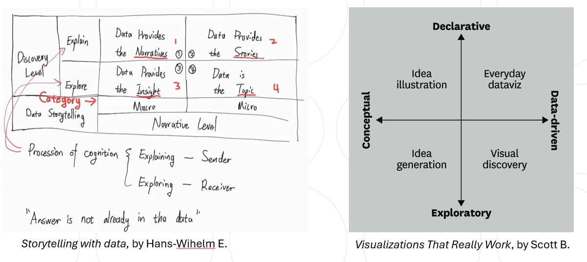
Datasets are the collection of symbolic information on things, while the ubiquity of narrative provides a universal interpretation method for datasets. Designers refer to narratology and semiotics as theoretical base, to match data visualization functions to usage scenarios. The above categorization construct the usage scenarios of data visualization narratives from designers Hans-Wihelm E. and Scott B.
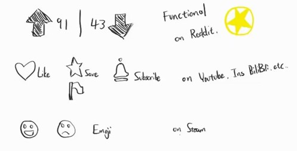
A data set may contain many samples, variables, and sets. They are visualized as a shape in a chart, like the plot of a story. In the illustration below, a combination of numbers and symbols tells a complete story to the audience, such as:
“This video got 100 likes.”
……and if there are 100 videos of the creator, the data of likes can form a plot from the dataset, for example:
"A creator who works tirelessly, receiving more and more likes within a year."
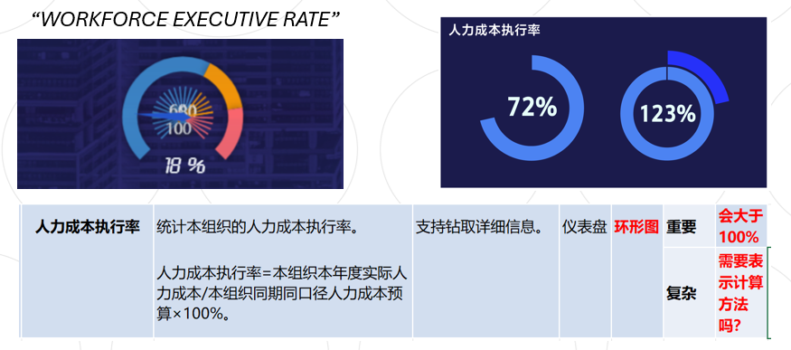
In practice, the situation can be more complicated, resulting in multiple interpretations and differences, such as this data event:
"The labor cost execution rate of company A in September"
I met this problem during the iteration of an digital human resource data dashboard project. This data is a complex statistic that measures the implementation effect of the human management plan, but the original designer ignored the fact that in individual cases, this value would be greater than 100%, thus used the wrong chart.
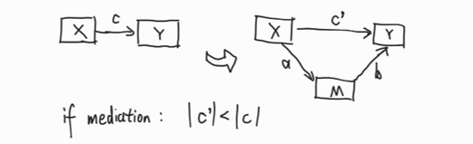
A plot is also a narrative of events, the emphasis falling on causality. The relationships between the data constitute the plot; they structure the conflict and resolution of the story, conveying to the reader the reality reflected in the dataset. In statistics, flow charts are widely used to express causality and correlation.
In the example on the right, I combined two vivid charts to create such a plot to transform the information of the data into persuasiveness:
"Nigeria's energy structure is very bad and has caused many deaths in the past.”
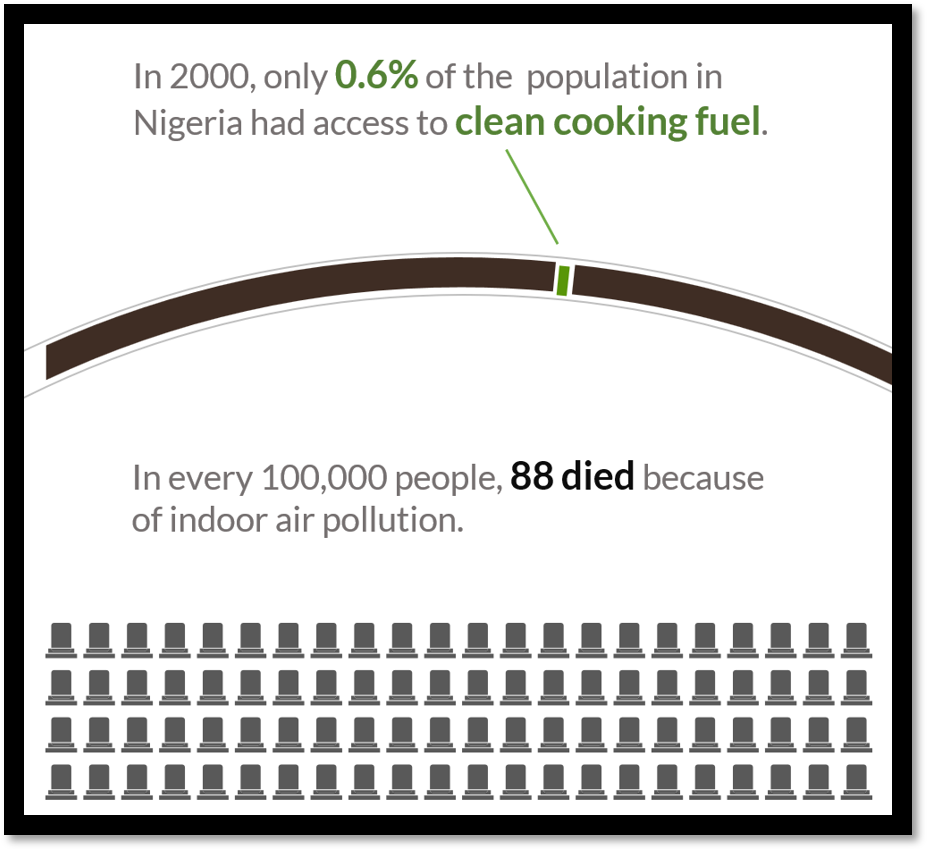
For a specific story, the narrative structure and its intent depend on the needs. In the practice of the 'Nigeria Energy Transition Plan' data visualization, I employ the narrative structure of Cinderella to present the development plan for a better tomorrow to the investors, setting the stage for their participation. The chart depicts a group of people striving to improve their living conditions. Although they have achieved some initial results, they still face significant challenges. Therefore, now is the opportune moment for savvy investors to step in and make pivotal investments.
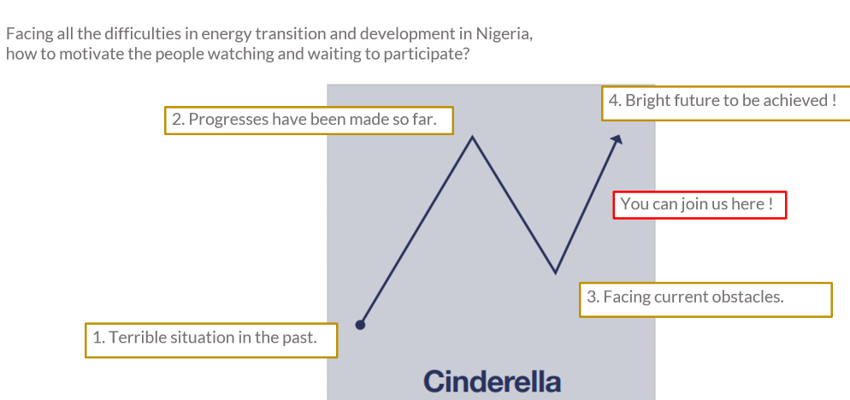
In the aforementioned project, I referred to psychological theories to help the narrative impress investors. According to attribution theory by Weiner, B. (1985), “......people tend to attribute their successes internally (to their own abilities or efforts), and their failures externally (to external factors beyond their control)......which could motivate them to continue supporting the project during tough times, believing that the core reasons for initial success remain unchanged.”
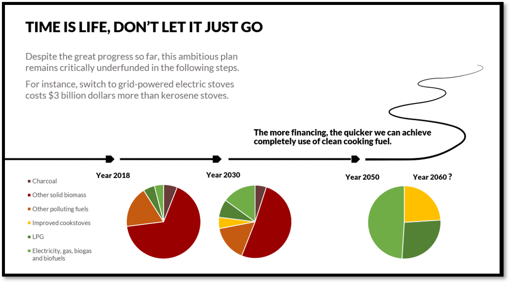
Reference
Barthes, R. (1977) Image, Music, Text. Trans. Stephen Heath. New York: Hill and Wang.
Berinato S. (2016) Visualizations That Really Work, Harvard Business Review
Eckert H. W. (2022) Storytelling with data: gaining insights, developing strategy and taking corporate communications to a new level
Forster, E.M. (1927). Aspects of the Novel. Harcourt Brace & Company.
Weiner, B. (1985). "An Attributional Theory of Achievement Motivation and Emotion." Psychological Review, 92(4), 548-573.
Long-Term Trends in the Public Perception of Artificial Intelligence
DATA VISUALIZATION / PERSONAL PROJECT / 2022
This is a data visualization project, explaining the trends in public opinions, which had long been focus on the development of Artificial Intellegence.
Watch on Youtube
A data research report analyzed all the content related to AI in the New York Times over the past decades and counted the data of different fields, relevance, and attitudes.
After reading the report, I extracted and collated these data and made several information charts based on them to intuitively see how the public (media) attitude changes.
The power of AI is obvious to all. Who knows when they will suddenly lose
their jobs because of AI? And who is expecting AI to make life better?
In any case, it is essential to pay attention.
Articles published by the New York Times between January 1986 and May 2016—more than 3 million articles in total. more than 8000 paragraphs that mention AI over a thirty year period in total. Researchers evaluate the mood level of each article with a 5-point Likert scale, and record the data in the dataset.
Posters in display
Data of reviews from different sections on the N.Y.T.
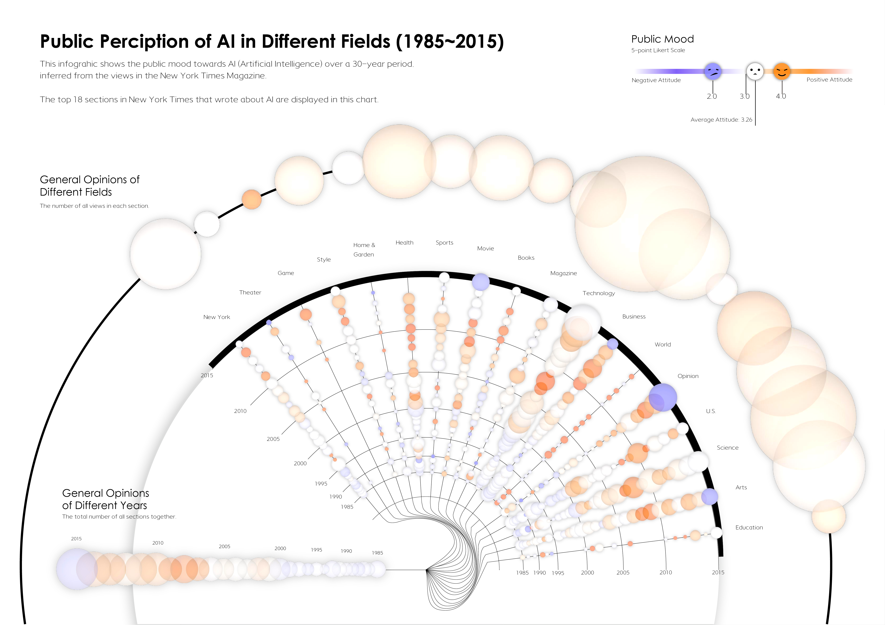
Data of reviews from different keyword indicators.
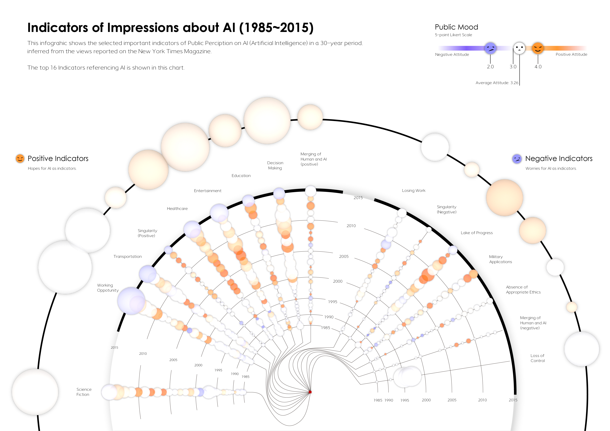
The attitude of perception of the public has always been an interesting and
valuable topic, both for researchers and viewers (even for the bystanders).
Researchers can study on culture, society, media, and philosophy from the data, for
topics such as what kind of events can affect people's attitudes towards what
emotional direction. Observers can use the information to make business forecasts.
And people who watch the activity can better understand themselves or just enjoy
the happiness from empathy.
Plastics in Antarctica
Data Visualization / PERSONAL PROJECT / 2024
Web version 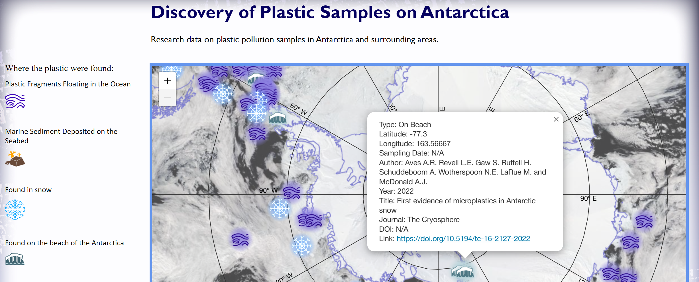
A series of outputs telling a story of who, when, where and how plastic waste reached to the antarctica and the southern ocean. By integrated multiple articles and related datasets, this project will provide an overall view of this emerging study field, to the college students.
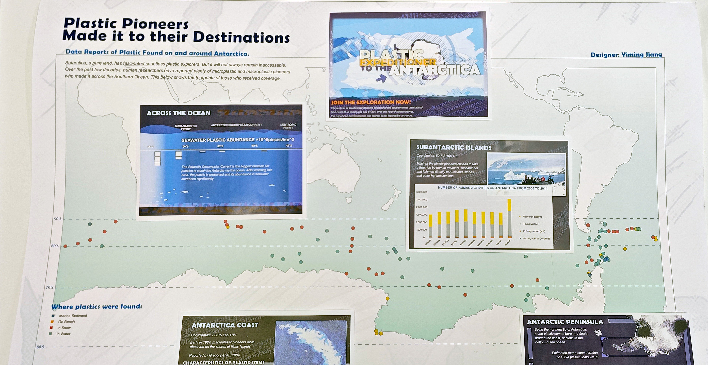
Antarctica and the Southern Ocean are subject to increasing levels and diversity of human activities that may severely affect environmental, scientific and historic values within its marine and terrestrial ecosystems and cryosphere.
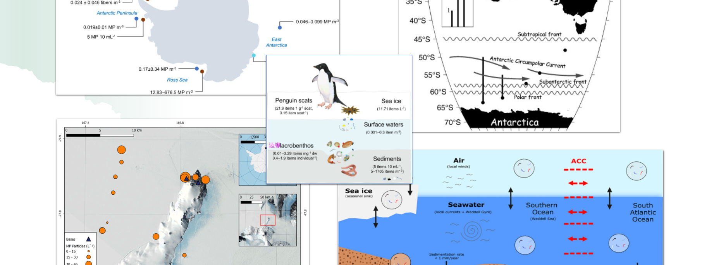
As an emerging research field, plastic pollution in Antarctica has not been fully studied and has received even less social attention. Therefore, based on the suggestions of scientists, I explore this topic to disseminate some valuable information to the public.
 Extract information that is understandable from the literature reviews and original data, and visualize it in a vivid way.
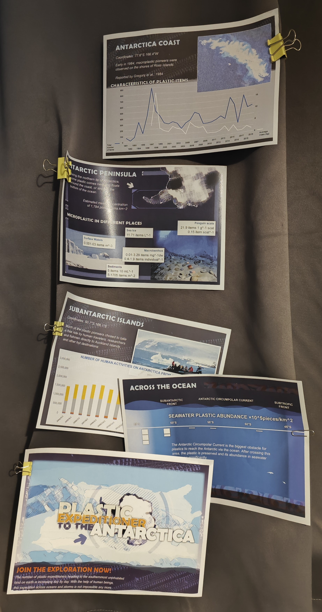
Extract information that is understandable from the literature reviews and original data, and visualize it in a vivid way.
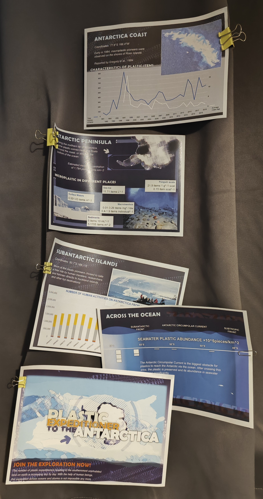
Concept Design: Lumen Residents
INFORMATION DESIGN / PERSONAL PROJECT / 2021
A project of the visualization of the light environment in the cityof Shanghai, which contains a series of multiple-layer maps and aguidance book as a reference.
In 2050, Shanghai has become the largest city in east Asia,attracting hundreds of millions of foreigner to live in the city.They need to either buy new house or rent old house to live in.Under such circumstance,the light environment, as one of themost important aspect in evaluating living condition, shall have aclear and direct way to be presented to these people.
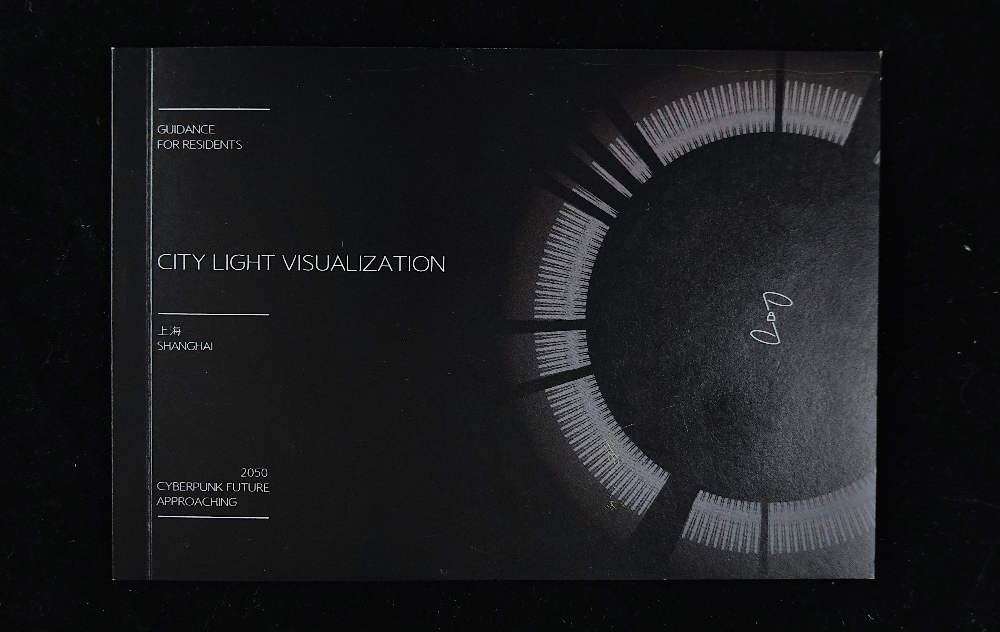
Following the light regulation guidebooks, I design these visualization concept in a booklet for foreigners to check out different light environments in the city.
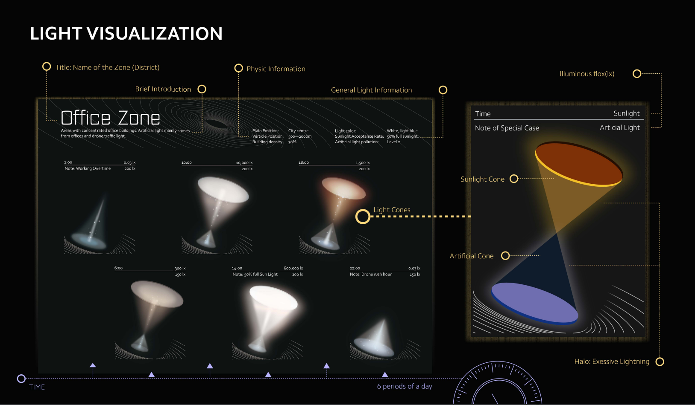
The booklet categorizes the information by places. In addition, I also designed a series of maps to show information by different time periods in a day.
 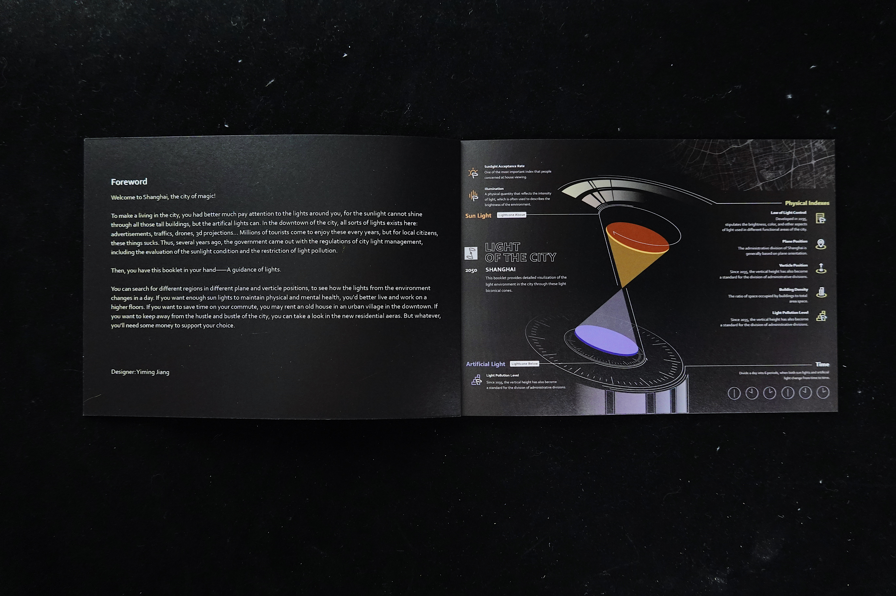
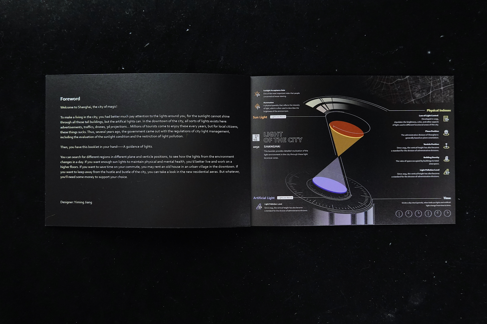

Arranging Knowledge
PRINTINGS / PERSONAL PROJECT / 2023
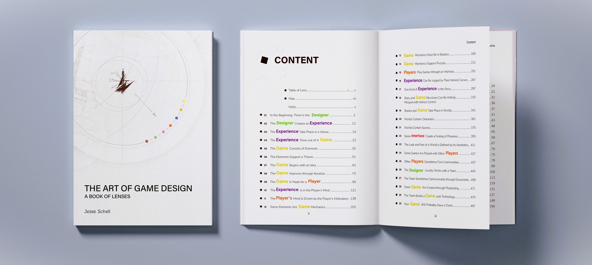
ln this project, l redesigned the book"The Art of Game
Design" to better its reading experience, and to make it betterunderstood by readers.Based on my interview and research, lfound the design defects of this book and improved them,and finally achieved the balance of functionality, beauty andrich knowledge content.
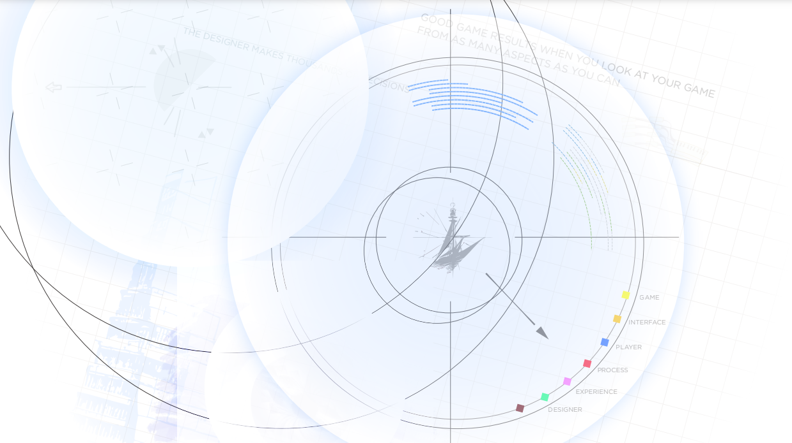
As someone who is always interested in game, l have experienced theuniqueness of design and aesthetics in games, and l have some
understanding of game design of my own.Therefore, l want this bookto be more than just a guide book, to have the aesthetic feeling of thegood games. When reading or referring this book, I hope the designerscan feel that they are doing a special and meaningful work.
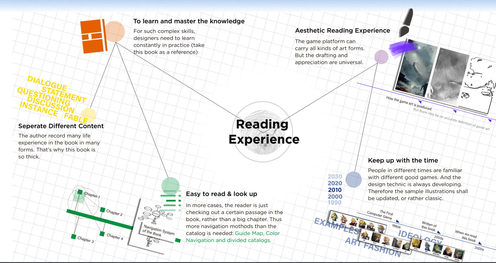
To truly understand game design, designersmust understand a complex network composed of creativity, psychology, art, technology andbusiness,and gradually establish a complex relationship system between designers, players,games, teams and customers in mind.

 *part of the illustrations were produced by Midjourney.
*part of the illustrations were produced by Midjourney.
Data Visualization for IMF 70th Anniversary
Data Visualization / Design Cooperation / 2024
A collaboration project between LCC Ma Design for Data Visualization with the International Money Fund.We designed a set of data visualization posters and a visual interactive installation for our partners' 70th anniversary conference this year.
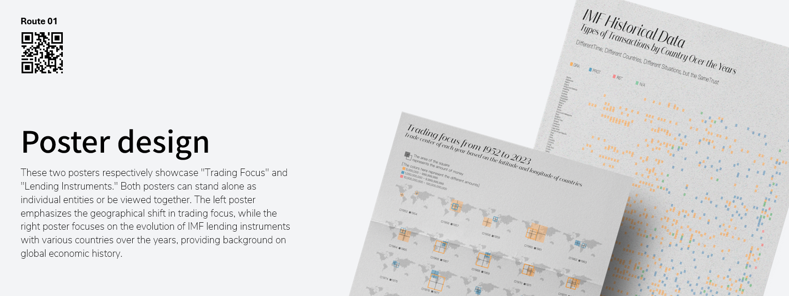
These two posters respectively showcase "Trading Focus" and "Lending Instruments." One emphasizes the geographical shift in trading focus. Another focuses on the evolution of IMF lending instruments with various countries over the years, providing background on global economic history.
We visualized the data of IMF’s commitments with partners over the 70 years through this interactive installation. It contains 24 accessible acrylic boards with figure of the data in each 3-year time span. The data is engraved into relief by laser and is colored with stickers. The transparency of boards allow allows viewers to watch historical changes directly along time. Also, the Audience can take one board to read the information and explore more detailed knowledge by scanning the QR code.
To have a clearer and deeper view of the dataset, we organized the data of each commitment into squares, and represented the variables with the geometric figures. All the commitments made with in a 3-years time span is collected on one map board as a chart, which is associated with world events during the certain period in the viewer's mind.
DHR Data Dashboard Iteration Project
Data Visualization / Internship / 2024
This is a cooperative project with Neusoft, a leading Chinese Information Technology Services Corporation. I provided professional suggestions as part of their binual iteration of a digital human resource management systems.

 For work that pursues efficiency and accuracy, higher requirements on the readability of the data dashboard is always on the top. I optimized the graphics and interactivity of the data dashboard based on the manager's working scenes, statistical logic in datasets, and the order of enterprise resources. Also, the visual design is strictly proofread in detail to prevent duplication, misunderstanding and counter-intuitive expression.
While in the context of a humanistic management model, for managers, digital dashboard is no longer just data and tables, but also a storyboard that tells stories with culture to unites people. I regard each chart as a window in the comic to support users in interpreting data with a coherent narrative, and let the knowledge unfold naturally according to the usage scenarios of the executive's work. "Revolutionary optimization solution," commented the project director, "Now our data dashboard is as vivid as a comic!"
For work that pursues efficiency and accuracy, higher requirements on the readability of the data dashboard is always on the top. I optimized the graphics and interactivity of the data dashboard based on the manager's working scenes, statistical logic in datasets, and the order of enterprise resources. Also, the visual design is strictly proofread in detail to prevent duplication, misunderstanding and counter-intuitive expression.
While in the context of a humanistic management model, for managers, digital dashboard is no longer just data and tables, but also a storyboard that tells stories with culture to unites people. I regard each chart as a window in the comic to support users in interpreting data with a coherent narrative, and let the knowledge unfold naturally according to the usage scenarios of the executive's work. "Revolutionary optimization solution," commented the project director, "Now our data dashboard is as vivid as a comic!"
Game Design: Set Fire to the Internet
BOARD GAME / COOPERATOR:ROHAN / 2022
This is a strategy card game designed by Game Designer Mr.Duan and me. People live in an information environment shaped by various media, which significantly influence them but often go unnoticed. Therefore, we wanted to tell a story about media and public opinions, and to provoke thought on the new media through gamified experience.
 In this game, the two players act the role of Cyber Empress and the Witch, manipulate everything they could touch----online communities, opinion leaders, various media platforms, to gain support from the neitizens and dominate the whole internet.
A set of game concludes 30+ different card illustration and a number of different tokens. Referencing from pokers, the graphic design represents 4 different types of media platforms, 4 different types of neitizens, 3 types of social influencers and 2 types of dictatorship with symbolic patterns. These elements are gradually connected and accumulated during the game, forming a rich and meaningful story.
In this game, the two players act the role of Cyber Empress and the Witch, manipulate everything they could touch----online communities, opinion leaders, various media platforms, to gain support from the neitizens and dominate the whole internet.
A set of game concludes 30+ different card illustration and a number of different tokens. Referencing from pokers, the graphic design represents 4 different types of media platforms, 4 different types of neitizens, 3 types of social influencers and 2 types of dictatorship with symbolic patterns. These elements are gradually connected and accumulated during the game, forming a rich and meaningful story.


Madagascar Endangered Species
INSTAGRAM / COOPERATION WITH BEYOND WORDS STUDIO / 2024
We collaborated with Beyond Words Studio as a team of three on this one week project. Our goal is to spread information about the decline of species diversity in Madagascar through the Instagram platform.
We were inspired by the famous movie Madagascar (2005), which depicted a picture of the wild, wonderful, and vibrant natural environment. But little might the audience know: Out of the screen, many of the lovely creatures are facing severe survival situation due to the overexploitation and unsustainable agriculture.
We took the concept of stamps, the classic travel souvenir, to convey an impressive sense of exotic wilderness. In addition to this, we used the data on this postmark as a visual centerpiece to emphasize the urgent environmental situation represented.
We organized the data of endangered species in Madagascar, including:
Basic ecological situation of Madagascar Islands.
The data of General situation of endangered species in Madagascar.
Detailed data of 4 typical endangered species and the taxonomic groups they are from.
Comparison of the global average level with the situation in Madagascar.
Others
GRADUATES DATA VISUALIZATION / UIC DESIGN CENTER / 2023
RESEARCH / Data Visualisation Research and Practices / 2024
EPIMETHEUS /GAME DESIGN PROJECT / TEAM WORK / 2022~2023

EPIMETHEUS / GAME DESIGN PROJECT / TEAM WORK / 2022~2023

PHOTOGRAPHY / PERSONAL WORK / 2021

PHOTOGRAPHY / PERSONAL WORK / 2020
Contact Information
y.jiang0220237@arts.ac.uk
(+86) 13591604618
(+44) 7354 535980